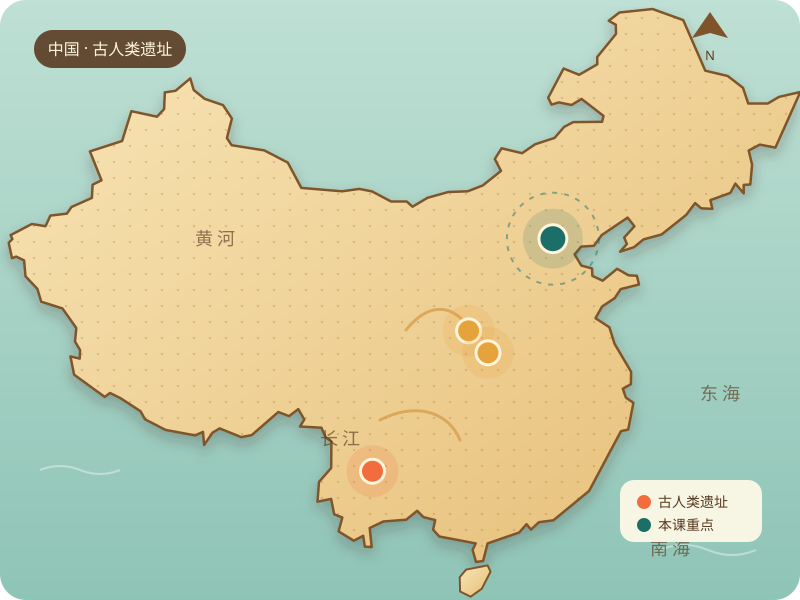

约170万年前
元谋人
云南 · 元谋
我国境内目前已知最早的古人类之一
把时间摊开看
从约 170 万年前到约 3 万年前，中国境内生活着多种古人类。先记住名字和地点，再去看他们留下的证据。
约170万年前
云南 · 元谋
我国境内目前已知最早的古人类之一
约160万年前
陕西 · 蓝田
发现多个头骨化石
约100万年前
湖北 · 郧阳
为研究人类演化提供重要材料
约70万—20万年前
北京 · 周口店
会使用火，群居生活
约3万年前
北京 · 周口店
会人工取火，掌握磨光、钻孔
时间轴为示意，不按等比例绘制。教材中的年代均为约数。
考古队集合
这些遗址并不是散落的点。它们沿长江、黄河等大河流域分布，共同拼出中国境内远古人类的活动版图。

点选圆点 · 查看档案云南 · 元谋
在元谋人遗址附近，还发现了石器、炭屑等遗物。考古学家由此推测，他们已经在改造自然、获取食物。
示意图仅表示遗址大致方位，不作为精确地理测量依据。
翻开档案卡
轻触卡片翻面，把“年代、地点、生活”一次记全。蓝田人和郧县人也在本课地图里，别忘了回头找他们。
约170万年前
云南 · 元谋
最早之一约70万—20万年前
北京 · 周口店
本课重点约3万年前
北京 · 周口店
进步明显同一条线索上，还有蓝田人（陕西蓝田，约160万年）和郧县人（湖北郧阳，约100万年）。
04 / BEIJING MAN
在北京西南的周口店龙骨山，考古学家发现了大量北京人化石、石器和用火遗迹。他们在这里生活了漫长的几十万年。
北京周口店龙骨山
约70万—20万年
打制石器
使用天然火
MINI LAB / 火种实验
北京人可能从雷击、山火中取得火种，再小心保存。点击添柴，看看火带来的三份“礼物”。
已添 0 / 3 根柴
05 / UPPER CAVE
同样是周口店，山顶洞人生活在约 3 万年前。他们的模样已经和现代人基本相同，生活里多了针线、装饰和仪式。
能把骨针、石珠等器物打磨、钻孔。
不再只依赖天然火种，这是用火能力的重要进步。
骨针、穿孔兽牙和贝壳，说明他们已有爱美意识。
遗骸周围撒有赤铁矿粉末，可能已有原始的埋葬观念。
QUICK COMPARE / 对比记忆
都生活在周口店，但时间、工具和生活方式已经不同。
| 比较项 | 北京人 | 山顶洞人 |
|---|---|---|
| 距今 | 约70万—20万年 | 约3万年 |
| 工具 | 打制石器 | 掌握磨光、钻孔技术 |
| 用火 | 使用天然火 | 会人工取火 |
| 生活 | 采集、狩猎、群居 | 缝衣、装饰、埋葬死者 |
注意：山顶洞人仍以打制石器为主，但已经掌握磨光和钻孔技术，不要误写成“全部使用磨制石器”。
合上手账之前
我国是世界上发现古人类化石和旧石器时代遗址最多的国家之一。遗址主要分布在长江、黄河等大河流域。
云南 · 陕西 · 湖北 · 北京从元谋人、蓝田人、郧县人，到北京人、山顶洞人；从打制石器到磨光钻孔，从使用火到人工取火。
工具在进步 · 生活在丰富化石是研究人类起源的主要证据。把化石、石器、用火遗迹放在一起，考古学家才能推断远古人类怎样生活。
化石 + 遗物 = 推理07 / CHECKPOINT
5 道题，看看你能不能把“年代、地点、证据、进步”全部对上号。
答错也没关系，页面会告诉你为什么。
我国境内目前已知最早的古人类之一是谁？